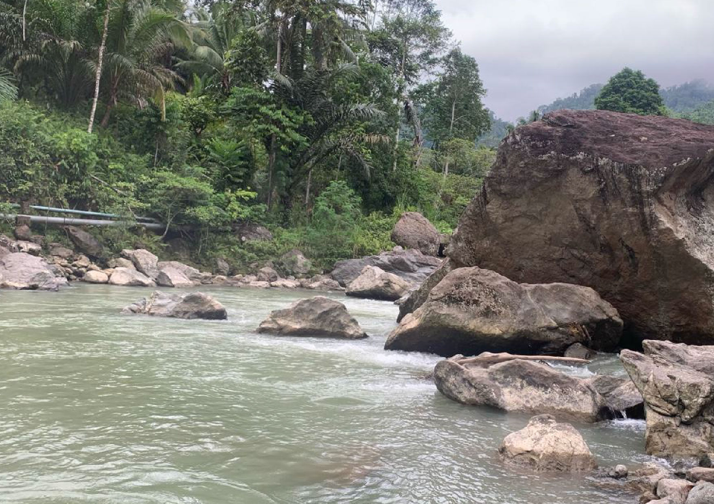

Selamat datang di keindahan alam Kecamatan Bambaira, Sulawesi Barat! Temukan pesona tersembunyi di Wisata Alam Sungai Bambatunu, yang berlokasi di Desa Kaluku Nangka, Kabupaten Pasangkayu. Terletak sekitar 20 km dari pusat kabupaten, Anda bisa menikmati perjalanan sekitar 50 menit dengan sepeda motor menuju ke destinasi menakjubkan ini.
Pemerintah Desa Kaluku Nangka sedang menyiapkan kejutan ekstrem untuk para pengunjung. Bersiaplah untuk merasakan sensasi luar biasa dengan dibukanya jalur arung jeram dan flying fox di kawasan Sungai Bambatunu. Aktivitas seru ini tidak hanya menawarkan keindahan alam yang memikat, tetapi juga petualangan yang memacu adrenalin.
Rasakan pengalaman arung jeram yang mendebarkan di sepanjang sungai atau nikmati kebebasan meluncur di udara dengan flying fox. Inilah kesempatan untuk mencoba petualangan yang belum pernah Anda rasakan sebelumnya.
Selain memberikan pengalaman tak terlupakan, kehadiran arung jeram dan flying fox di Sungai Bambatunu juga bertujuan untuk menghidupkan perekonomian Desa Kaluku Nangka. Dengan dukungan Anda, kami berharap destinasi ini dapat berkembang dan memberikan dampak positif bagi pertumbuhan ekonomi lokal.

{kind=link}